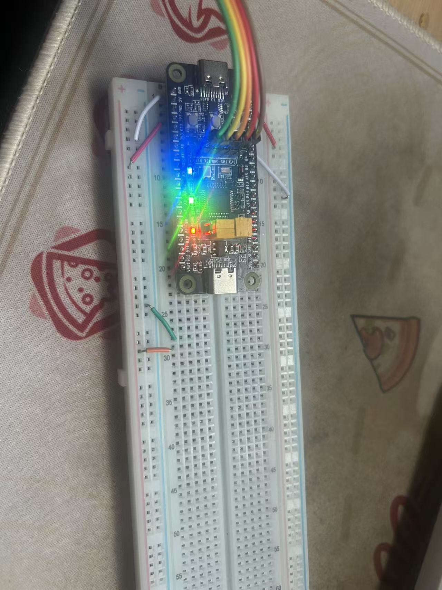
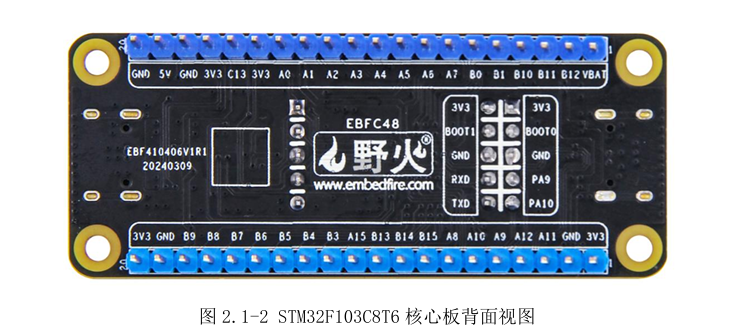
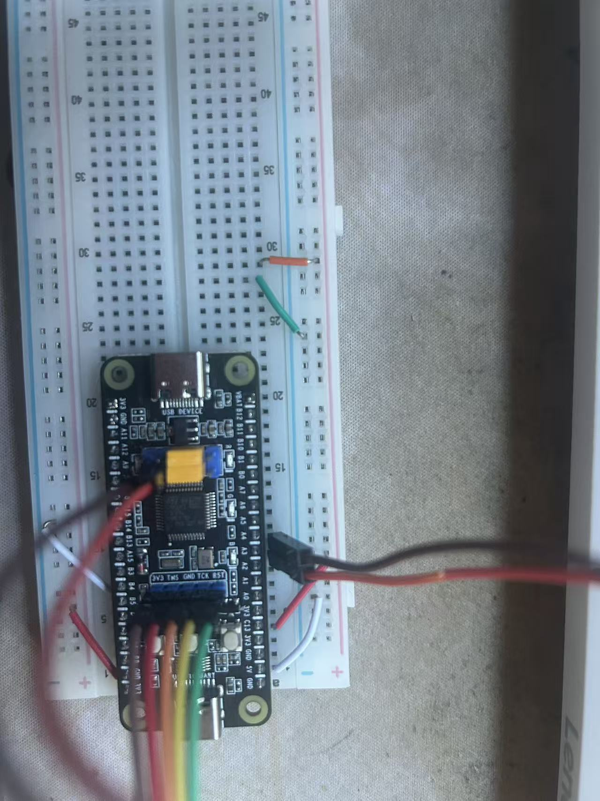
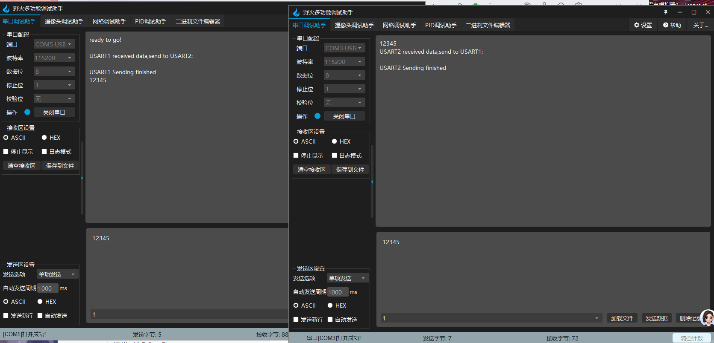

Background
Having spent a long time learning STM32 development with Keil MDK (Keil5), I began to encounter significant workflow inefficiencies. A prime example is the printf redirection: in Keil, we typically rely on rewriting the fputc function. However, this often requires repetitive boilerplate code for every new project. Seeking a more modern workflow, I migrated to CLion. Although setting up the toolchain (STM32CubeMX + CLion + MinGW/OpenOCD) took me a whole day and was incredibly demanding, the result was worth the effort.
Problem Description
The issue arose while I was experimenting with multiple USART channels for data transmission. I was following a tutorial based on Keil and attempted to port the code to my CLion environment. This involved adapting the low-level I/O retargeting from Keil’s fputc to the GCC-compatible _write function. After compiling and flashing the firmware to my STM32 board, the system appeared to run, but communication failed completely.
Troubleshooting
Step 1: Code Review
main.c
/* USER CODE BEGIN Header */
/**
******************************************************************************
* @file : main.c
* @brief : Main program body
******************************************************************************
* @attention
*
* Copyright (c) 2025 STMicroelectronics.
* All rights reserved.
*
* This software is licensed under terms that can be found in the LICENSE file
* in the root directory of this software component.
* If no LICENSE file comes with this software, it is provided AS-IS.
*
******************************************************************************
*/
/* USER CODE END Header */
/* Includes ------------------------------------------------------------------*/
#include "main.h"
#include "usart.h"
#include "gpio.h"
/* Private includes ----------------------------------------------------------*/
/* USER CODE BEGIN Includes */
#include <stdio.h>
/* USER CODE END Includes */
/* Private typedef -----------------------------------------------------------*/
/* USER CODE BEGIN PTD */
#define LENGTH 64
/* USER CODE END PTD */
/* Private define ------------------------------------------------------------*/
/* USER CODE BEGIN PD */
/* USER CODE END PD */
/* Private macro -------------------------------------------------------------*/
/* USER CODE BEGIN PM */
/* USER CODE END PM */
/* Private variables ---------------------------------------------------------*/
/* USER CODE BEGIN PV */
uint8_t Rxbuff1[LENGTH];
uint8_t Rxbuff2[LENGTH];
/* USER CODE END PV */
/* Private function prototypes -----------------------------------------------*/
void SystemClock_Config(void);
/* USER CODE BEGIN PFP */
void USART_SendString(UART_HandleTypeDef *huart, char *str);
/* USER CODE END PFP */
/* Private user code ---------------------------------------------------------*/
/* USER CODE BEGIN 0 */
/* USER CODE END 0 */
/**
* @brief The application entry point.
* @retval int
*/
int main(void)
{
/* USER CODE BEGIN 1 */
/* USER CODE END 1 */
/* MCU Configuration--------------------------------------------------------*/
/* Reset of all peripherals, Initializes the Flash interface and the Systick. */
HAL_Init();
/* USER CODE BEGIN Init */
/* USER CODE END Init */
/* Configure the system clock */
SystemClock_Config();
/* USER CODE BEGIN SysInit */
/* USER CODE END SysInit */
/* Initialize all configured peripherals */
MX_GPIO_Init();
MX_USART1_UART_Init();
MX_USART2_UART_Init();
/* USER CODE BEGIN 2 */
HAL_UARTEx_ReceiveToIdle_IT(&huart1, Rxbuff1, LENGTH);
HAL_UARTEx_ReceiveToIdle_IT(&huart2, Rxbuff2, LENGTH);
printf("Ready to go!!");
/* USER CODE END 2 */
/* Infinite loop */
/* USER CODE BEGIN WHILE */
while (1)
{
/* USER CODE END WHILE */
/* USER CODE BEGIN 3 */
}
/* USER CODE END 3 */
}
/**
* @brief System Clock Configuration
* @retval None
*/
void SystemClock_Config(void)
{
RCC_OscInitTypeDef RCC_OscInitStruct = {0};
RCC_ClkInitTypeDef RCC_ClkInitStruct = {0};
/** Initializes the RCC Oscillators according to the specified parameters
* in the RCC_OscInitTypeDef structure.
*/
RCC_OscInitStruct.OscillatorType = RCC_OSCILLATORTYPE_HSE;
RCC_OscInitStruct.HSEState = RCC_HSE_ON;
RCC_OscInitStruct.HSEPredivValue = RCC_HSE_PREDIV_DIV1;
RCC_OscInitStruct.HSIState = RCC_HSI_ON;
RCC_OscInitStruct.PLL.PLLState = RCC_PLL_ON;
RCC_OscInitStruct.PLL.PLLSource = RCC_PLLSOURCE_HSE;
RCC_OscInitStruct.PLL.PLLMUL = RCC_PLL_MUL9;
if (HAL_RCC_OscConfig(&RCC_OscInitStruct) != HAL_OK)
{
Error_Handler();
}
/** Initializes the CPU, AHB and APB buses clocks
*/
RCC_ClkInitStruct.ClockType = RCC_CLOCKTYPE_HCLK|RCC_CLOCKTYPE_SYSCLK
|RCC_CLOCKTYPE_PCLK1|RCC_CLOCKTYPE_PCLK2;
RCC_ClkInitStruct.SYSCLKSource = RCC_SYSCLKSOURCE_PLLCLK;
RCC_ClkInitStruct.AHBCLKDivider = RCC_SYSCLK_DIV1;
RCC_ClkInitStruct.APB1CLKDivider = RCC_HCLK_DIV2;
RCC_ClkInitStruct.APB2CLKDivider = RCC_HCLK_DIV1;
if (HAL_RCC_ClockConfig(&RCC_ClkInitStruct, FLASH_LATENCY_2) != HAL_OK)
{
Error_Handler();
}
}
/* USER CODE BEGIN 4 */
void HAL_UARTEx_RxEventCallback(UART_HandleTypeDef *huart, uint16_t Size)
{
if(huart->Instance == USART1)
{
USART_SendString(&huart1, "\r\nUSART1 received data,send to USART2:\r\n");
HAL_UART_Transmit_IT(&huart2, Rxbuff1, Size);
USART_SendString(&huart1, "\r\nUSART1 Sending finished\r\n");
HAL_UARTEx_ReceiveToIdle_IT (&huart1, Rxbuff1, LENGTH);
}
else if(huart->Instance == USART2)
{
USART_SendString(&huart2, "\r\nUSART2 received data,send to USART1:\r\n");
HAL_UART_Transmit_IT(&huart1, Rxbuff2, Size);
USART_SendString(&huart2, "\r\nUSART2 Sending finished\r\n");
HAL_UARTEx_ReceiveToIdle_IT(&huart2, Rxbuff2, LENGTH);
}
}
void USART_SendString(UART_HandleTypeDef *huart, char *str)
{
while (*str)
{
HAL_UART_Transmit(huart, (uint8_t *)str, 1, HAL_MAX_DELAY);
str++;
}
}
int _write(int file, char *ptr, int len)
{
HAL_UART_Transmit(&huart1, (uint8_t *)ptr, len, HAL_MAX_DELAY);
return len;
}
/* USER CODE END 4 */
/**
* @brief This function is executed in case of error occurrence.
* @retval None
*/
void Error_Handler(void)
{
/* USER CODE BEGIN Error_Handler_Debug */
/* User can add his own implementation to report the HAL error return state */
__disable_irq();
while (1)
{
}
/* USER CODE END Error_Handler_Debug */
}
#ifdef USE_FULL_ASSERT
/**
* @brief Reports the name of the source file and the source line number
* where the assert_param error has occurred.
* @param file: pointer to the source file name
* @param line: assert_param error line source number
* @retval None
*/
void assert_failed(uint8_t *file, uint32_t line)
{
/* USER CODE BEGIN 6 */
/* User can add his own implementation to report the file name and line number,
ex: printf("Wrong parameters value: file %s on line %d\r\n", file, line) */
/* USER CODE END 6 */
}
#endif /* USE_FULL_ASSERT */
Step 2: Port Detection (The Python script)
c0mlist.py
import serial.tools.list_ports
ports_list = list(serial.tools.list_ports.comports())
if len(ports_list) <= 0:
print("No serial port device found. Please check if the USB is plugged in tightly!")
else:
print("The following serial port devices are found:")
for port in ports_list:
print(f"Port number:{port.device} - Description:{port.description}")
The following serial port devices are found:
Port number:COM3 - Description:USB-SERIAL CH340 (COM3)
Port number:COM5 - Description:USB-SERIAL CH340 (COM5)
Port number:COM1 - Description:通信端口 (COM1)
No Problem, maybe printf function?
Step 3: Cross-Verification with Keil (The fputc part)
Main change:
int _write(int file, char *ptr, int len)
{
HAL_UART_Transmit(&huart1, (uint8_t *)ptr, len, HAL_MAX_DELAY);
return len;
}
to
int fputc(int ch , FILE *f)
{
HAL_UART_Transmit(&huart1 , (uint8_t *)&ch , 1 , HAL_MAX_DELAY);
return ch;
}
Still can’t work, maybe the circuit?
Step 4: Hardware Sanity Check (LEDs)
HAL_GPIO_WritePin(GPIOA, LED_R_Pin|LED_G_Pin|LED_B_Pin, GPIO_PIN_RESET);
photo

No problem, maybe my mistake?
Step 5: Schematic & Wiring Check
Schematic Diagram

photo

hmm…PA2(TX)–>RXD PA3(RX)–>TXD…Correct…So what is the problem
Step 6: The Solution
Suddenly, it hit me: The computer recognizes the USB-to-TTL adapter as a valid COM port as long as it’s plugged into the USB slot, even if the other end is not connected to anything.
This meant I was monitoring a “Ghost Port”—the computer saw the adapter, but the adapter wasn’t actually physically connected to the MCU’s PA2/PA3 pins. I re-connected the wires using a dedicated USB-to-TTL cable connecting PA2 (TX) and PA3 (RX). As expected, it worked immediately.
photo

Conclusion
Personally, this was a nerve-wracking but valuable experience. When the error first occurred, I was lost in the complexity of the new toolchain. My troubleshooting process was:
-
Verified the hardware basics using a simple LED blink program.
-
Reverted to the original Keil code to rule out software porting errors.
-
Since both software and basic hardware logic were correct, I was forced to look at the physical layer.
-
It turned out to be a simple physical connection issue rather than a complex register configuration error. Sometimes, the problem really is just a loose wire!
Root Cause
A Physical Layer Wiring Error. (Surprisingly, the issue was not in the software porting or the toolchain, but in a simple hardware misconnection.)(>_<)🔨